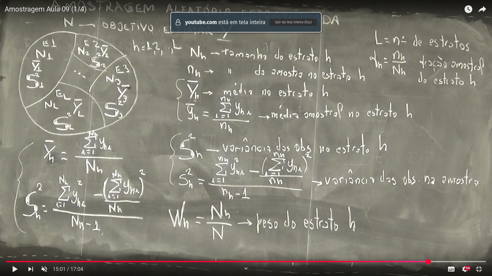
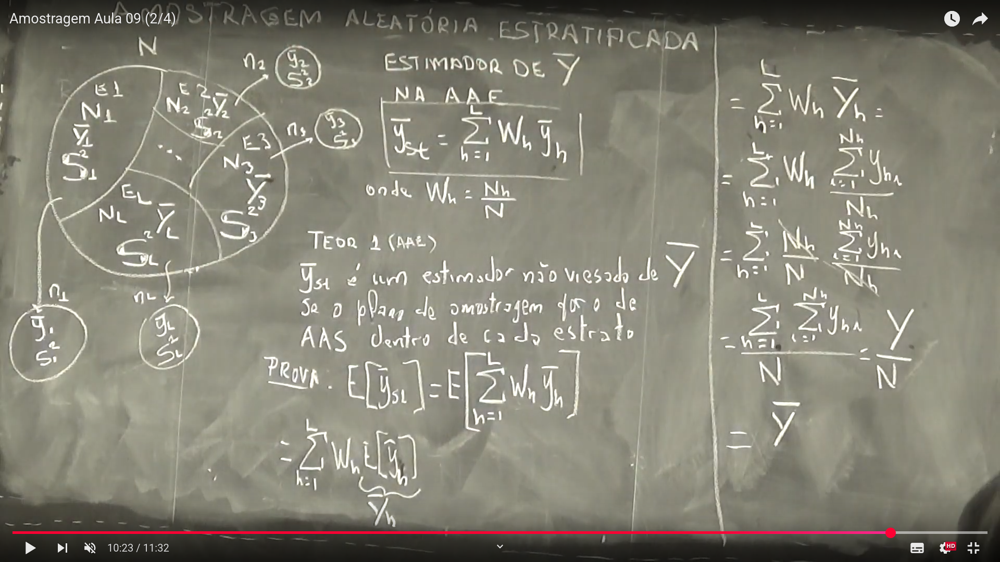
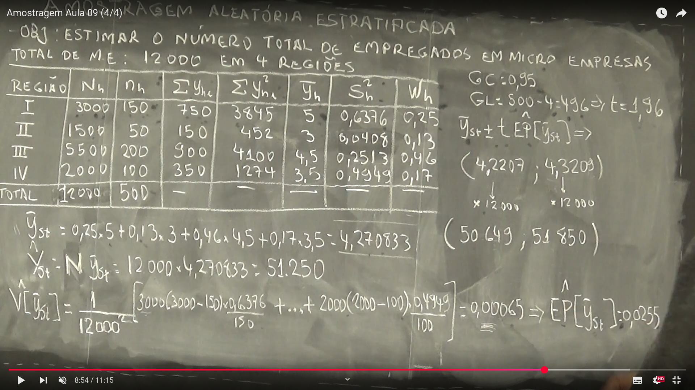

Semana 8
Aula 01 - Amostragem Aleatória Estratificada
Definição
A Amostragem Aleatória Estratificada é uma técnica em que a população é dividida em estratos (grupos homogêneos internamente), e se sorteia uma amostra aleatória dentro de cada estrato.
Por que usar?
- A população pode ser heterogênea como um todo, mas homogênea dentro dos estratos.
- Garante representatividade dos subgrupos.
- Reduz a variabilidade das estimativas.
- Permite maior precisão, mesmo com o mesmo tamanho de amostra.
Objetivo da Aula
Estimar \(\bar{Y}\), a média populacional.
Definições e Fórmulas
População dividida em \(L\) estratos:
Para cada estrato \(h = 1, 2, \dots, L\):
\[ \begin{align*} N_h &= \text{tamanho do estrato } h \\ n_h &= \text{tamanho da amostra no estrato } h \\ a_h &= \frac{n_h}{N_h} \quad \text{fração amostral do estrato } h \\ y_{hi} &= \text{valor da $i$-ésima observação no estrato } h \\ \bar{Y}_h &= \frac{1}{N_h} \sum_{i=1}^{N_h} y_{hi} \quad \text{(média populacional do estrato $h$)} \\ \bar{y}_h &= \frac{1}{n_h} \sum_{i=1}^{n_h} y_{hi} \quad \text{(média amostral do estrato $h$)} \\ S_h^2 &= \frac{\sum_{i=1}^{N_h} y_{hi}^2 - \frac{\left( \sum_{i=1}^{N_h} y_{hi} \right)^2}{N_h}}{N_h - 1} \quad \text{(variância populacional do estrato $h$)} \\ s_h^2 &= \frac{\sum_{i=1}^{n_h} y_{hi}^2 - \frac{\left( \sum_{i=1}^{n_h} y_{hi} \right)^2}{n_h}}{n_h - 1} \quad \text{(variância amostral do estrato $h$)} \\ W_h &= \frac{N_h}{N} \quad \text{(peso do estrato $h$)} \end{align*} \]
Observações
- \(L\): número total de estratos.
- A estimativa da média geral pondera as médias de cada estrato pelo seu peso \(W_h\).
- A variância dentro de um estrato pode ser estimada com base na amostra (\(s_h^2\)) ou na população (\(S_h^2\)) — se conhecida.
| #### Ilustração Visual |
 |
| Quadro da aula:  |
| ## Aula 02 - Estimador de \(\bar{Y}\) |
| #### Estimador de \(\bar{Y}\) |
| Na AAE (Amostragem Aleatória Estratificada), temos: |
| \[ \bar{Y}_{st} = \sum_{h=1}^{L} W_h \bar{y}_h \] |
| onde: |
| \[ W_h = \frac{N_h}{N} \] |
Teorema 2 (AAE)
\(\bar{Y}_{st}\) é um estimador não-viesado de \(\bar{Y}\)
se o plano de amostragem for o de AAS (Amostragem Aleatória Simples) dentro de cada estrato.
Prova:
\[ \mathbb{E}[\bar{Y}_{st}] = \mathbb{E} \left[ \sum_{h=1}^{L} W_h \bar{y}_h \right] \]
\[ = \sum_{h=1}^{L} W_h \mathbb{E}[\bar{y}_h] \]
\[ = \sum_{h=1}^{L} W_h \bar{Y}_h \]
\[ = \sum_{h=1}^{L} \frac{N_h}{N} \bar{Y}_h \]
\[ = \frac{1}{N} \sum_{h=1}^{L} N_h \bar{Y}_h \]
\[ = \frac{1}{N} \sum_{i=1}^{N} y_i = \bar{Y} \]
Quadro da aula: 
Aula 03 - Estimador da Variância \(S_h^2\)
Teorema 2 (AAE)
Se as amostras são selecionadas independentemente em cada estrato
de acordo com o plano de AAS, então:
\[ \mathrm{V}[\bar{y}_{st}] = \frac{1}{N^2} \sum_{h=1}^{L} N_h (N_h - n_h) \frac{S_h^2}{n_h} \]
Prova:
\[ \mathrm{V}[\bar{y}_{st}] = \mathrm{V} \left[ \sum_{h=1}^{L} W_h \bar{y}_h \right] = \sum_{h=1}^{L} W_h^2 \mathrm{V}[\bar{y}_h] + 2 \sum_{h < d} W_h W_d \mathrm{Cov}[\bar{y}_h, \bar{y}_d] \]
Como os estratos são independentes,
\(\mathrm{Cov}[\bar{y}_h, \bar{y}_d] = 0\) para \(h \ne d\):
\[ \Rightarrow \mathrm{V}[\bar{y}_{st}] = \sum_{h=1}^{L} W_h^2 \mathrm{V}[\bar{y}_h] \]
Pelo Teorema 2 da AAS:
\[ \mathrm{V}[\bar{y}_h] = \frac{N_h - n_h}{N_h} \cdot \frac{S_h^2}{n_h} \]
Substituindo:
\[ \mathrm{V}[\bar{y}_{st}] = \sum_{h=1}^{L} \left( \frac{N_h}{N} \right)^2 \cdot \frac{N_h - n_h}{N_h} \cdot \frac{S_h^2}{n_h} = \sum_{h=1}^{L} \frac{N_h (N_h - n_h)}{N^2} \cdot \frac{S_h^2}{n_h} \]
Estimador da variância
Pelo Teorema 3 (AAS), \(s_h^2\) é um estimador não-viesado da variância \(S_h^2\):
\[ \widehat{\mathrm{V}}[\bar{y}_{st}] = \frac{1}{N^2} \sum_{h=1}^{L} N_h (N_h - n_h) \frac{s_h^2}{n_h} \]
Intervalo de Confiança
Se \(\hat{EP[\bar{y}_{st}]} = \sqrt{\mathrm{\hat{V}}[\bar{y}_{st}]}\), então:
\[ \bar{y}_{st} \pm t_{(1 - \alpha/2)} \cdot \sqrt{\widehat{\mathrm{V}}[\bar{y}_{st}]} \]
Conclusão:
\[ \mathbb{E}[\bar{Y}_{st}] = \bar{Y} \]
Ou seja, \(\bar{Y}_{st}\) é não-viesado.
Quadro da aula:
Aula 04 - Exercício
Estimativa do total de empregados em microempresas
Objetivo: Estimar o número total de empregados em microempresas.
População total: \(N = 12\,000\) distribuídos em 4 regiões.
| Região | \(N_h\) | \(n_h\) | \(\sum y_{hi}\) | \(\sum y_{hi}^2\) | \(\bar{y}_h\) | \(s_h^2\) | \(W_h\) |
|---|---|---|---|---|---|---|---|
| I | 3000 | 150 | 750 | 3845 | 5 | 0.6376 | 0.25 |
| II | 1500 | 50 | 150 | 452 | 3 | 0.0408 | 0.13 |
| III | 5500 | 200 | 900 | 4100 | 4.5 | 0.2513 | 0.46 |
| IV | 2000 | 100 | 350 | 1274 | 3.5 | 0.4949 | 0.17 |
| Total | 12000 | 500 |
Estimador da média estratificada
\[ \bar{y}_{st} = 0{,}25 \cdot 5 + 0{,}13 \cdot 3 + 0{,}46 \cdot 4{,}5 + 0{,}17 \cdot 3{,}5 = 4{,}270833 \]
Estimador do total
\[ \hat{Y}_{st} = N \cdot \bar{y}_{st} = 12\,000 \cdot 4{,}270833 = 51\,250 \]
Estimativa da variância do estimador
\[ \widehat{V}[\bar{y}_{st}] = \frac{1}{12\,000^2} \left[ 3000(3000 - 50) \cdot \frac{0{,}6376}{50} + \dots + 2000(2000 - 100) \cdot \frac{0{,}1494}{100} \right] = 0{,}00065 \]
Erro padrão
\[ \widehat{EP}[\bar{y}_{st}] = \sqrt{0{,}00065} \approx 0{,}0255 \]
Intervalo de Confiança (95%)
Graus de liberdade:
\[
GL = 500 - 4 = 496 \Rightarrow t_{0{,}975, \, 496} \approx 1{,}96
\]
\[ \bar{y}_{st} \pm t \cdot \widehat{EP}[\bar{y}_{st}] = 4{,}270833 \pm 1{,}96 \cdot 0{,}0255 = (4{,}2207;\, 4{,}3208) \]
Multiplicando pelo total da população:
\[ IC_{95\%}(\hat{Y}_{st}) = (4{,}2207 \cdot 12\,000,\; 4{,}3208 \cdot 12\,000) = (50\,649;\; 51\,850) \]
Quadro da aula: 